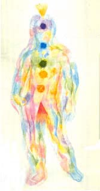

Expression of Consciousness:Personal emotions
Statement Consciousness
makes: "I feel emotionally"
Consciousness is expressed in in basic emotions and reactions like fear,
anger and love. Most of these emotions relate to the individual self.
Expression of Health: Natural unblocked flow of feelings corresponding with Divine Reality, creates: love
Expression of Disease: Dark blocks of energy; stagnated or depleted energy, fear, anger, grief
Plane of existence: Physical Plane
colour: Rainbow
The Emotional Body (Second Layer)
The second auric body, or next finer after the etheric body, is generally called the emotional body, and is associated with feelings. It roughly follows the outline of the physical body. Its structure is much more fluid than the etheric and does not duplicate the physical body. Rather, it appears to be colored clouds of fine substance in continual fluid motion. It extends one to three inches from the body.
This body interpenetrates the denser bodies that it surrounds. Its colors vary from brilliant clear hues to dark muddy ones, depending on the clarity or confusion of the feeling or energy that produces them. Clear and highly energized feelings such as love, excitement, joy or anger are bright and clear; those feelings that are confused are dark and muddy. As these feelings become energized through personal interaction, body psychotherapy, etc., the colors separate out into their primary hue and brighten.
This body contains all the colors of the rainbow. Each chakra looks like a vortex of a different color and follows the colors of the rainbow. The list below shows chakras of the emotional body and their colors.
Base Chakra - Red
Genital Chakra - Red-Orange
Navel Chakra - Yellow
Heart Chakra - bright grass green
Throat Chakra - Sky Blue
Brow Chakra - Indigo
Crown Chakra - White
In general, the body appears to be blobs of color moving within the matrix of the etheric field and also extending beyond it a bit. At times a person may throw off color blobs of energy into the air around him. This is especially observable when someone is releasing feelings in a therapy session.
from Barbara Brennan, Hands of Light p.50
My comments on the Physical Emotional Body
The Physical Emotional body (or Physical Emotional psyche), is the source of selfish feelings and emotions, physical likes and dislikes, and lower sensual enjoyment. This is the "Physical Vital" of Sri Aurobindo's Integral psychology. It is called the Emotional body because it represents an actual "body" or principle (usually represented in terms of an aura) that extends beyond the physical body. The emotional consciousness descends into the physical Emotional consciousness, and from there into the chthonic Subconsciousness.
Plato referred to this principle (or it's equivalent) as the epithymia or lower appetites, and associated it with the belly, or in other words the navel chakra (contrast with Barbara Brennan's genital chakra association for the emotional body).
Whereas the Etheric body is usually described by clairvoyants as being of a uniform grey, blueish, or violet colour, and consists of a matrix or network of lines of force (the nadis, previously referred to), the Emotional body as described here is said to full of amorphous or ever-changing swirls of colour [figure at top of page], the colours (and sometimes the shapes as well) representing the predominant emotional characteristic of that person. This is also in keeping with the Theosophist Leadbeater's description of the aura and the - as he termed it - "Astral Body". In this emotion-colour equation, an angry or agressive person, for example, will have a great deal of dirty red in his aura, an intellectual person a lot of yellow, a spiritual person blue or violet, and so on. It is actually possible using a sort of intuitive imagination to sense these colours to some extent. We even have them in everyday language "he saw red", "green with envy" etc. Here we enter the realm of "thought-forms."
Christopher Hills and Barbara Brennan both describe the chakras of the Physical Emotional Body (for Chrisopher Hills these are the chakras as such, he does not specify bodies) as a rainbow sequence, with the Muladhara or base-chakra being red in colour, the Swadhisthana or (in this system) Navel chakra as orange, and so on through to the Sahasrara at the top of the head, which is violet or purple in colour.
The following table presents some associations and correspondences with the middle emotional body; some of which are quite close, others very distant and abstract only.